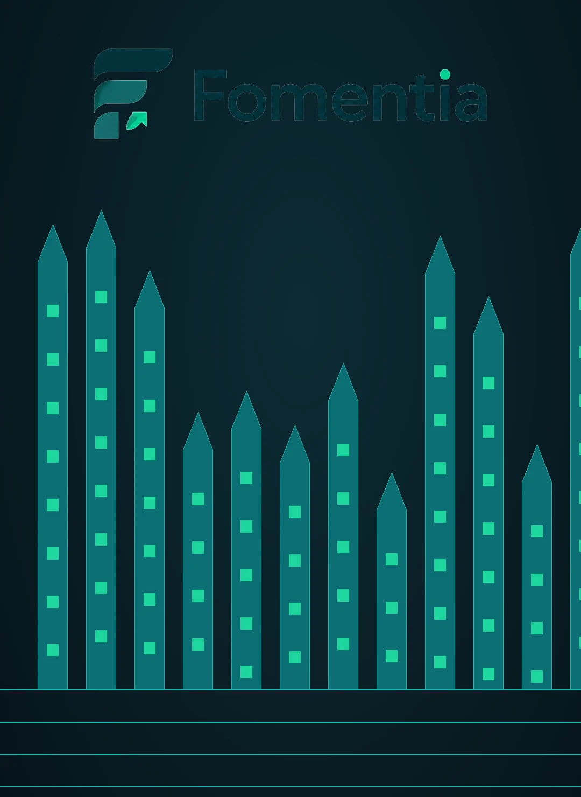
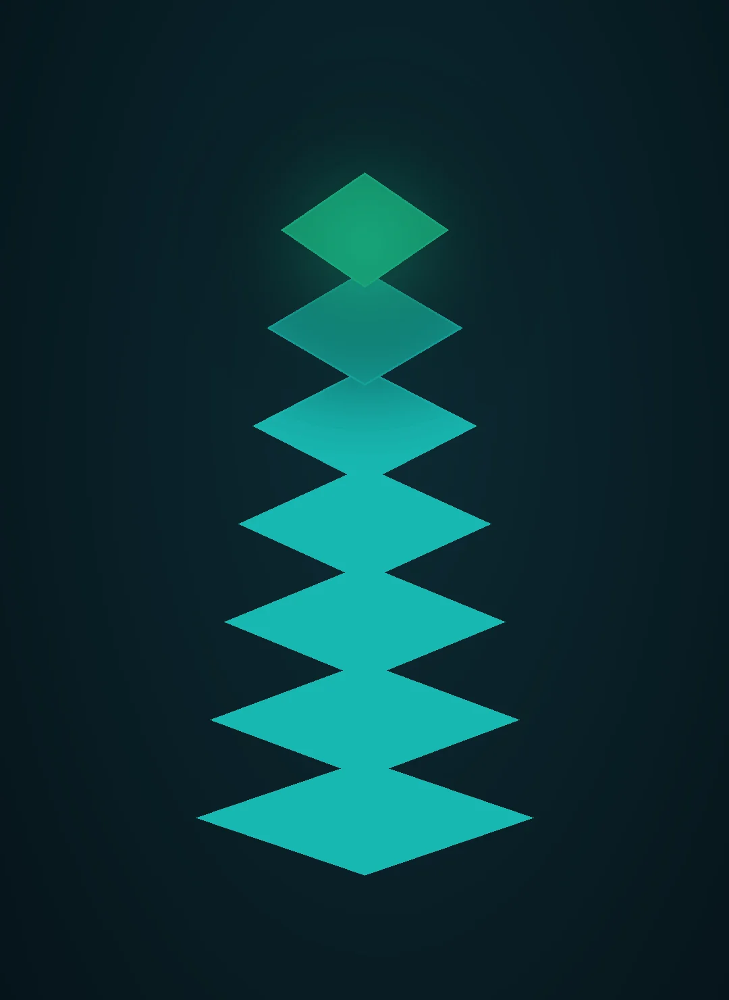

Quem Somos
Gestão inteligente
Gestão inteligente
para captação pública.
Uma estrutura profissional, contínua e organizada para transformar oportunidades, projetos e acompanhamento em uma jornada clara, rastreável e escalável.

Captação exige estrutura
Oportunidade é só
Oportunidade é só
o começo.
Organizações com alta demanda de atendimento precisam de uma operação de captação que funcione de forma contínua — não de ações isoladas. O Método Capta+ organiza a prospecção de editais, emendas, fomento público e patrocinadores dentro de um processo estruturado.
Em cada etapa, o trabalho ganha contexto, prioridade e acompanhamento para que a equipe saiba o que está sendo buscado, o que precisa ser preparado e o que acontece depois do protocolo.
Como atuamos
Quatro camadas que trabalham
Quatro camadas que trabalham
de forma integrada.
A atuação combina leitura institucional, estruturação técnica, organização fiduciária e prospecção contínua para sustentar a jornada de captação.
Camada Jurídica
Leitura do estatuto, enquadramento institucional e organização das adequações necessárias para cada oportunidade.
Técnico-Operacional
Planos de trabalho, metas, cronogramas e rastreabilidade para transformar intenção em projeto estruturado.
Camada Fiduciária
Orçamento, rateio, organização financeira e critérios de conformidade tratados dentro da lógica de cada proposta.
Prospecção e Radar
Monitoramento de oportunidades e leitura de aderência para concentrar energia nas chances que fazem sentido para a entidade.

O que essa estrutura entrega
Mais organização.
Isolamento por organização
Método padronizado
Escalabilidade
Rastreabilidade
Mais organização.
Mais rastreabilidade.
Cada entidade mantém sua própria jornada, seus projetos e seu contexto de acompanhamento.
Uma sequência estruturada do diagnóstico ao acompanhamento, reduzindo improvisos.
A plataforma permite organizar múltiplas entidades e oportunidades sem perder clareza operacional.
Histórico por entidade, oportunidade e projeto para apoiar decisões e continuidade.
Escopo do serviço
Cinco frentes para conduzir
Cinco frentes para conduzir
a captação de ponta a ponta.
O trabalho é organizado conforme a necessidade da entidade e o estágio de cada oportunidade.
Reforma e blindagem estatutária
Diagnóstico do estatuto, enquadramento e organização das adequações necessárias para ampliar a aptidão institucional.
Vetting e aptidão
Leitura de aderência, checklist de habilitação e avaliação técnica de submissão para cada oportunidade.
Radar de editais e enquadramento
Monitoramento contínuo, cruzamento de requisitos e priorização das oportunidades mais compatíveis.
Plano de trabalho
Estruturação do projeto com diagnóstico, objetivos, metas, cronograma, recursos, orçamento, riscos e monitoramento.
Habilitação documental e prestação de contas
Organização de dossiê, certidões, requisitos de conformidade e registros de execução conforme o escopo contratado.
Tecnologia própria
A plataforma coloca
A plataforma coloca
o método em operação.
Uma estrutura digital reúne oportunidades, compatibilidade, estruturação, prontidão documental e acompanhamento em uma mesma lógica de trabalho — apoiando o método do começo ao fim.

Formatos de formalização
Uma relação clara
Uma relação clara
desde o início.
A organização pode iniciar pelo formato mais simples ou adotar um instrumento completo para parcerias continuadas.
Nota de Prestação de Serviços
Documenta o serviço prestado, o período e o valor de forma objetiva, sendo uma via simples para o início da operação.
- Definição do serviço
- Período e valor
- Início após aceite
Contrato de Prestação de Serviços
Instrumento completo para operações continuadas, com escopo, metas, prazos e responsabilidades definidos entre as partes.
- Escopo detalhado
- Metas e prazos
- Obrigações das partes
Próximo passo
Captação precisa de
Captação precisa de
método, direção e continuidade.
Conte o cenário da sua organização. O Método Capta+ entra em contato para entender a demanda e indicar a forma de atuação adequada.